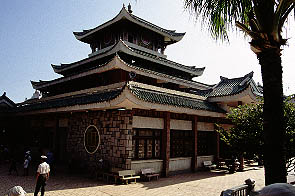
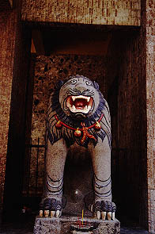
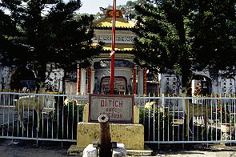
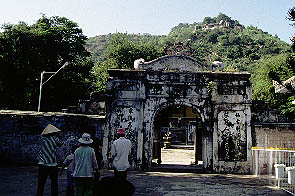
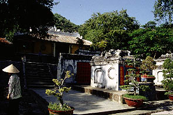
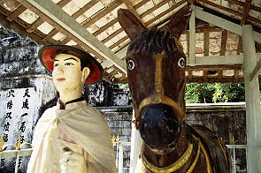

MieuBaChuaXu,LangThoaiNgocHau/AnGiang,ChauDoc
バーチュアスー廟、トァイゴクハウ陵/チャウドック
タイアン寺のすぐ近くにあるバーチュアスー廟についで参りしてきた。
ここも大変商売熱心な線香売りや物乞いがいてスススっと寄って来ては往年のノムさんのささやき戦法よろしく「線香安イデスヨー、買え」「ヘイミスター、1ドルでいいからくれ」などと悪魔の呪文のように私の耳もとでささやき続ける。お仕事御苦労様です。

これが廟の建物。向いには立派な信徒会館のようなものが建っており結構繁昌している御様子。
見れば観光客よりもベトナム人の、しかもかなりマジで拝みに来ている人の方が多い。
うっ、ここに参拝に来ている人達の気合いオーラをビシビシ感じるぞ。これは心して参拝せねば。
廟内はベトナムでは珍しく撮影禁止、しかもそれを見張るためなのかあちこちに警備員らしき人が入る。
もしかしたら物凄く神聖なところに来てしまったのでは。
廟内は後ろの方はガランとしているが前の仏像がある辺りには大勢の人が押しかけている。黄色い表紙のガイドブックによるとチュアスー女神というお方が奉られているという。1870年に建てられ1972年に今の形になったそうです。
皆、黙々と拝んでいる。参拝者の本気具合がこちらにも伝わって来る。供え物も他の寺に比べてこころなしかゴージャスなような気が。
特に廟内にはこれといってめぼしいものは無かったが参拝者の真剣さが廟内に充満していて印象的だった。といってもあまり真面目なところは趣味じゃないので草々に退散してしまったのだが。
そういえば中にお宝展示コーナー的なところがあって、そこにあったスパンコールの衣装は小林幸子みたいで凄かったです。
狛犬なのか？
で、そのまた近くにあるトァイゴクハウ陵。
またまた黄色い表紙のガイドブックによればトァイゴクハウという武将の陵墓で1829年に建造されたそうだ。
で、この武将、この地方の運河を造った人物で、食事をするならチラン通りのホンファットが中華とベトナム料理が・・・あ、ここは関係ないですね。
ここは今イチ流行っていない様子。規模も小さいし、コレ！といった見どころも無いし。
しかも御利益もあまりないのか地元の参拝客もほとんどいない。
いるのはノムさんのささやき戦法をマスターしたあの人達だけ。
 
入口にはなぜか大砲と鹿の像。門を潜ると中にはコンクリートで塗り込められた土饅頭のような墓や祠やお堂があり、少し上ると本殿がある。
中は・・・どうなってたか思い出せない程地味でした。

あっというまに見終わってしまった。

一番印象的だったのはこのびっくり顔のウマとナイスな青年でしょうか。
次へいきましょう
越南珍寺劇場
珍寺大道場 HOME